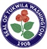
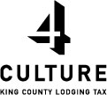

Rainier Symphony is a 501(c)(3) non-profit corporation supported through ticket sales, local businesses, government and private citizens. Donors are a critical part of our success, as are the many volunteers who donate their time and expertise to support the activities of Rainier Symphony.
Donations
Your donation helps keep classical music alive and affordable in South Sound communities. Did you know that ticket sales cover less than half the cost of a concert? Just the cost of sheet music alone can be high. For example, we often need to rent music to accompany a guest soloist, which typically costs $800-900. The music for large orchestral works, such as Pictures At An Exhibition may cost $1,500. Your donation will help pay for guest artists, sheet music, piano tuning, performing arts center rental, and free tickets for students.
To donate by mail: Rainier Symphony, P.O. Box 58182, Seattle, WA 98138. If applicable, also include a gift matching form from your employer and double your gift!
Concert Sponsorship
Businesses can support Rainier Symphony in its mission to provide the finest community orchestra in the Puget Sound Region. Donations of any amount are welcome! We offer recognition in concert programs for donations of $100 or more. See the sponsorship form for details.
In-Kind Donations
Another way businesses can offer support is through in-kind donations, such as flowers and decorations, professional services (legal, marketing, grant writing), and printing. Contact us if you have goods or services to donate.
Amazon Smile

|
Volunteers
Volunteers are the fuel which run our organization. A variety of roles and time commitments are needed. At concerts, we need ushers and box office staff. Throughout the season we need marketing/publicity, grant writing, and various types of administrative support. Contact us if you are interested in joining our team.
Special thanks to:
- 4Culture
- Amgen Foundation
- Bank of America Foundation
- Boeing Company
- City of Tukwila Arts Commission
- Henry Bischofberger Violins
- Masco Corporation
- Microsoft Matching Gifts Program
- Milgard Windows
- techsoup.org
- Tukwila School District
|  |  |
**Updated 11/23/2015.